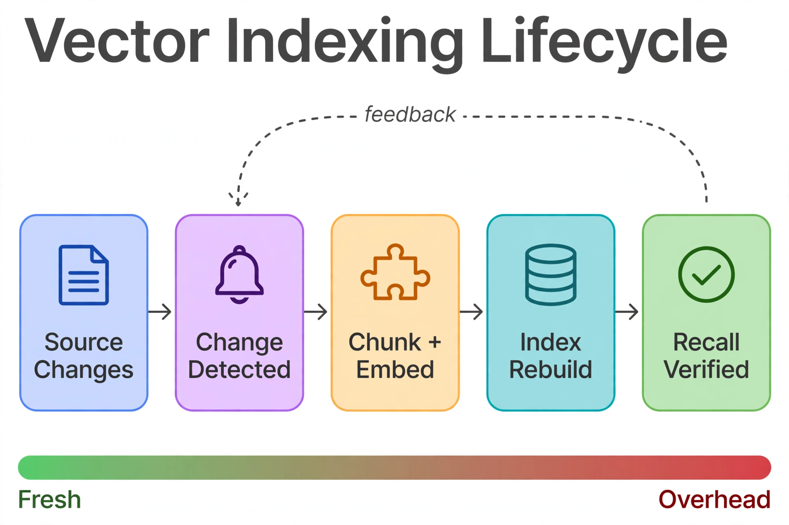

Chapter 28: Indexing Pipelines
The Vector Indexing Lifecycle

Read the diagram left to right: a change in the source data is detected (CDC, trigger-based outbox, or polling watermark), the changed text is chunked and embedded, the index is rebuilt, and recall is verified against a known-question set. The dashed feedback arrow is the step most teams skip — verification results feed back into change detection, so a recall regression triggers a re-examination of what changed rather than a blind full rebuild. The green-to-red bar underneath is the governing tradeoff: push rebuilds left for maximum freshness and you pay for it in embedding and index-build overhead. The right operating point depends entirely on how fast your source data moves.
A vector index is not a fire-and-forget artifact — it has a lifecycle driven by the data underneath it:
1. Source data changes — a document is added, updated, or deleted in your primary store (SQL Server tables, S3, a CMS, a product catalog).
2. Change detected — CDC, a trigger-based outbox, or a polling watermark picks up the change.
3. Embedding generated — the changed text is chunked and embedded.
4. Index updated — vectors are written; the DiskANN index absorbs or is rebuilt around them.
5. Quality verified — recall checks confirm the index still serves correctly.
The freshness-performance tradeoff mirrors something DBAs already know from indexed views: the more aggressively you refresh, the closer to current your results, but the higher the maintenance overhead. SQL Server's DiskANN index in preview favors an index-after-load pattern — bulk ingest first, build the index once — over continuous trickle writes against an existing vector index. Design your pipeline around that constraint: buffer writes, then rebuild or refresh on a schedule your freshness SLA actually requires, not on every row change.
---
Building the Embedding Generation Pipeline
Here is a complete pipeline using OpenAI embeddings, writing into SQL Server native VECTOR with idempotent upserts:
# Python — chunk, embed, and upsert documents into SQL Server
import hashlib, openai, pyodbc
openai_client = openai.OpenAI()
conn = pyodbc.connect("DRIVER={ODBC Driver 18 for SQL Server};"
"SERVER=localhost;DATABASE=ragdb;Trusted_Connection=yes;"
"Encrypt=yes;TrustServerCertificate=yes")
MODEL_ID = "text-embedding-3-small"
DIM = 1536
def vec_lit(emb):
return "[" + ",".join(str(v) for v in emb) + "]"
def chunk_text(text, size=512, overlap=64):
# Simple word-based chunking; replace with tiktoken for production
words = text.split()
step = size - overlap
return [" ".join(words[i:i + size])
for i in range(0, len(words), step) if words[i:i + size]]
def upsert_document(doc_id, text, tenant_id):
"""Chunk, embed, and upsert a document into SQL Server."""
chunks = chunk_text(text)
resp = openai_client.embeddings.create(input=chunks, model=MODEL_ID)
content_hash = hashlib.sha256(text.encode()).hexdigest()
cur = conn.cursor()
for idx, (chunk, e) in enumerate(zip(chunks, resp.data)):
cur.execute("""MERGE dbo.DocumentChunks AS t
USING (SELECT ? AS DocId, ? AS ChunkIndex, ? AS ChunkText,
CAST(? AS VECTOR(1536)) AS Embedding,
? AS ModelId, ? AS TenantId,
? AS ContentHash) AS s
ON t.DocId = s.DocId AND t.ChunkIndex = s.ChunkIndex
WHEN MATCHED AND t.ContentHash <> s.ContentHash THEN
UPDATE SET ChunkText = s.ChunkText, Embedding = s.Embedding,
ContentHash = s.ContentHash,
UpdatedAt = SYSUTCDATETIME()
WHEN NOT MATCHED THEN
INSERT (DocId, ChunkIndex, ChunkText, Embedding,
ModelId, TenantId, ContentHash)
VALUES (s.DocId, s.ChunkIndex, s.ChunkText, s.Embedding,
s.ModelId, s.TenantId, s.ContentHash);""",
(doc_id, idx, chunk, vec_lit(e.embedding),
MODEL_ID, tenant_id, content_hash))
conn.commit()
return len(chunks)
The ContentHash guard is the pipeline's idempotency key: re-running the pipeline on an unchanged document updates nothing, so the job is safely re-runnable and the embedding API is never billed twice for the same text.
-- SQL Server: chunks table with content-hash idempotency
CREATE TABLE dbo.DocumentChunks (
ChunkId BIGINT IDENTITY(1,1) NOT NULL
CONSTRAINT PK_DocumentChunks PRIMARY KEY,
DocId NVARCHAR(100) NOT NULL,
ChunkIndex INT NOT NULL,
ChunkText NVARCHAR(MAX) NOT NULL,
Embedding VECTOR(1536) NOT NULL,
ModelId NVARCHAR(100) NOT NULL,
TenantId INT NOT NULL,
ContentHash CHAR(64) NOT NULL,
UpdatedAt DATETIME2(0) NOT NULL
CONSTRAINT DF_DocumentChunks_Updated DEFAULT SYSUTCDATETIME(),
CONSTRAINT UQ_DocumentChunks_Doc_Chunk UNIQUE (DocId, ChunkIndex)
);---
Change Data Capture for Continuous Indexing
Approach 1: Watermark polling. For freshness SLAs measured in minutes, a ROWVERSION or UpdatedAt watermark on the source table is the simplest reliable trigger. A scheduled job selects rows newer than the last watermark, runs them through the embedding pipeline, and advances the watermark in the same transaction.
-- SQL Server: watermark table + polling query
CREATE TABLE dbo.IndexWatermarks (
PipelineName NVARCHAR(100) NOT NULL
CONSTRAINT PK_IndexWatermarks PRIMARY KEY,
LastWatermark DATETIME2(0) NOT NULL
);
-- Poller (runs every N minutes via SQL Server Agent):
-- SELECT DocId FROM dbo.SourceDocuments
-- WHERE UpdatedAt > (SELECT LastWatermark FROM dbo.IndexWatermarks
-- WHERE PipelineName = 'doc-embeddings')
-- ORDER BY UpdatedAt;
-- ... embed each, upsert chunks, then:
-- UPDATE dbo.IndexWatermarks
-- SET LastWatermark = @maxSeen WHERE PipelineName = 'doc-embeddings';
Approach 2: SQL Server Change Data Capture. For sub-minute freshness requirements, polling does not cut it. Enable CDC on the source table and have the embedding consumer read the change tables — every insert/update/delete arrives as a row in cdc.dbo_SourceDocuments_CT with an operation code, no triggers required on the source table itself.
-- SQL Server: enable CDC on the source database and table
-- EXEC sys.sp_cdc_enable_db;
-- EXEC sys.sp_cdc_enable_table
-- @source_schema = 'dbo',
-- @source_name = 'SourceDocuments',
-- @role_name = NULL;
--
-- Consumer query: net changes since last LSN
-- DECLARE @from_lsn BINARY(10) = ...; -- persisted per pipeline
-- DECLARE @to_lsn BINARY(10) = sys.fn_cdc_get_max_lsn();
-- SELECT __$operation, DocId FROM cdc.dbo_SourceDocuments_CT
-- WHERE __$start_lsn > @from_lsn AND __$start_lsn <= @to_lsn;
-- __$operation: 1 = delete, 2 = insert, 3 = update (before), 4 = update (after)
Deletes need explicit handling in both approaches: a deleted source document must delete its chunks, or the vector index will keep serving ghost content. The CDC operation code makes this natural — map operation 1 to a chunk delete; with watermark polling, use soft deletes (IsDeleted flag) on the source so the poller can see them.
---
Index Optimization and Segment Management
DiskANN behavior under writes. In SQL Server 2025 preview, the pragmatic pattern is index-after-load: bulk ingest into the heap or clustered table first, then CREATE VECTOR INDEX once. For ongoing trickle writes, accumulate them in a staging table and rebuild the vector index on a schedule — nightly for most workloads, hourly only if the freshness SLA demands it.
The production pattern is to rebuild the vector index during a low-traffic window after bulk ingestion:
-- SQL Server: scheduled DiskANN rebuild after bulk ingestion
-- 1. Ingest into the base table (no vector index yet, or staged separately)
-- 2. Drop the stale vector index if one exists:
-- DROP INDEX IX_DocumentChunks_Embedding ON dbo.DocumentChunks;
-- 3. Rebuild:
CREATE VECTOR INDEX IX_DocumentChunks_Embedding
ON dbo.DocumentChunks (Embedding)
WITH (METRIC = 'cosine', TYPE = 'DiskANN', MAXDOP = 8);
-- 4. Verify with DMVs before serving traffic:
SELECT i.name, i.type_desc, p.rows
FROM sys.indexes AS i
JOIN sys.partitions AS p
ON p.object_id = i.object_id AND p.index_id = i.index_id
WHERE i.object_id = OBJECT_ID('dbo.DocumentChunks');
Plan the rebuild window from measured build times on your hardware and vector counts — DiskANN builds are CPU-intensive and parallelize with MAXDOP. Until the index exists or while it is being rebuilt, the exact VECTOR_DISTANCE scan path still serves correct (if slower) results, so schedule the rebuild like any other maintenance: off-peak, monitored, with a rollback plan.
---
Handling Embedding Model Changes
A model change invalidates every vector in the index — the pipeline must re-embed the full corpus, not just new documents. This is the heaviest workload the indexing pipeline will ever run: full-corpus embedding API spend plus a full table rewrite plus a DiskANN rebuild. Treat it as a planned migration (Chapter 23), not a routine pipeline run: side-by-side column, throttled backfill, eval-gated cutover.
---
Recall Degradation Detection
Indexes degrade silently — recall drops a point a month and nobody notices until users complain. Detect it with a canary: a fixed set of eval questions with known-good chunks (Chapter 27), run on a schedule against production, with results trended in dbo.EvalScores. A falling recall@k trend after heavy ingest periods is the signal to rebuild the DiskANN index; a falling trend with no ingest correlation points at corpus drift — new topics the chunking or model handles poorly.
-- SQL Server: canary recall check (scheduled, trended)
-- EvalCanary(QuestionId, QuestionEmbedding VECTOR(1536), GoldChunkId)
-- For each canary question: is GoldChunkId in the top-10?
-- Log the hit rate per run into dbo.EvalScores with Metric = 'canary_recall@10'.
-- Alert when the 7-day rolling average drops > 3 points below baseline.
---
Backfill Strategies for Large Datasets
The initial load — or a full re-embed after a model change — is a bulk operation, not a trickle. The pattern that works:
# Python — resumable backfill with checkpoints
import pyodbc
conn = pyodbc.connect("DRIVER={ODBC Driver 18 for SQL Server};"
"SERVER=localhost;DATABASE=ragdb;Trusted_Connection=yes;"
"Encrypt=yes;TrustServerCertificate=yes")
BATCH = 20000
cur = conn.cursor()
while True:
rows = cur.execute(f"""SELECT TOP ({BATCH}) DocId, BodyText
FROM dbo.BackfillQueue
WHERE Status = 'pending'
ORDER BY DocId""").fetchall()
if not rows:
break
for doc_id, body in rows:
upsert_document(doc_id, body, tenant_id=1) # from Section 28.2
cur.execute("UPDATE dbo.BackfillQueue SET Status = 'done' "
"WHERE DocId = ?", (doc_id,))
conn.commit() # checkpoint per batch: kill-safe and resumable
print("Backfill complete.")
---
Key Takeaways
MERGE upserts mean the pipeline is safely re-runnable and never double-bills the embedding API.dbo.EvalScores; falling recall after heavy ingest means rebuild the index, falling recall without ingest means corpus drift.QueryOptimizer — Self-Hosted SQL Performance Workbench
EXPLAIN visualizer · Index advisor · Slow query dashboard · SQL Server
Test yourself on this chapter
5 questions · instant scoring · explanations included